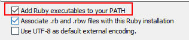

Sass安装
ruby安装
- 必选项

- 打开Start Command Prompt with Ruby

- 切换到你想安装sass的路径，输入命令

安装成功

查看sass版本与ruby，gem版本，显示即成功


- 编译sass文件
切换到sass文件目录，输入命令：

则编译出的css会出现在命令行上；
将编译出css保存到一个文件中（会在与scss文件的同一个文件夹下）
此时会有一个warning，不用管，文件已经编译出来了

- 文件监听
对文件夹sass下learn.scss监听，并自动编译生成learn.css,保存到css文件夹下，同时命令行输出提示：

- 文件夹监听
监听sass文件夹下所有文件，并将scss文件编译成css保存到css文件夹下，同时命令行输出提示：

- css文件转scss文件

- sass调试
命令行开启
两个的命令分别为 --debug-info， --sourcemap，开启如下：sass --watch style.scss:style.css --debug-infosass --watch style.scss:style.css --sourcemap
- 命令行其他配置选项
运行命令行帮助文档，可以获得所有的配置选项
sass -h
我们一般常用的有 --style， --sourcemap， --debug-info等。
sass --watch style.scss:style.css --style compactsass --watch style.scss:style.css --sourcemapsass --watch style.scss:style.css --style expanded --sourcemapsass --watch style.scss:style.css --debug-info
- --style表示解析后的css是什么格式，有四种取值分别为： nested， expanded， compact， compressed。
- --sourcemap表示开启sourcemap调试。开启sourcemap调试后，会生成一个后缀名为 .css.map文件。
- --debug-info表示开启debug信息，升级到3.3.0之后因为sourcemap更高级，这个debug-info就不太用了。
四种style生成后的css
// nested#main {
color: #fff;
background-color: #000; }
#main p {
width: 10em; }
.huge {
font-size: 10em;
font-weight: bold;
text-decoration: underline; }
// expanded#main {
color: #fff;
background-color: #000;
}
#main p {
width: 10em;
}
.huge {
font-size: 10em;
font-weight: bold;
text-decoration: underline;
}
// compact#main { color: #fff; background-color: #000; }
#main p { width: 10em; }
.huge { font-size: 10em; font-weight: bold; text-decoration: underline; }
// compressed#main{color:#fff;background-color:#000}#main p{width:10em}.huge{font-size:10em;font-weight:bold;text-decoration:underline}